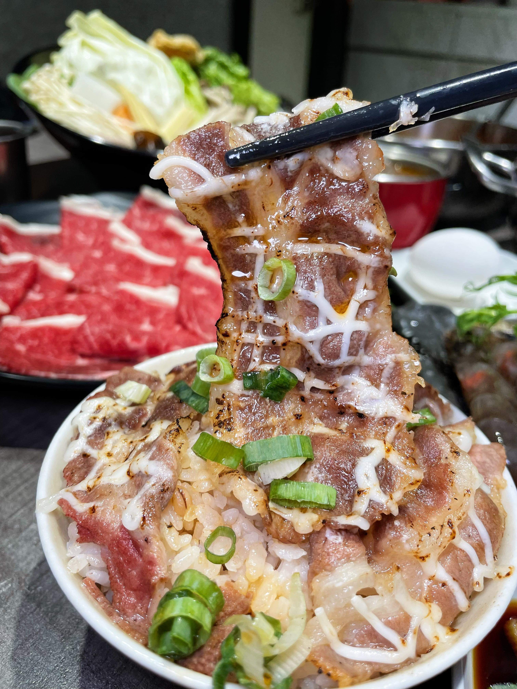

招牌每日限熬約 20 鍋，中永和藥膳火鍋首選，建議提前電話確認或線上預先點餐
肉片層層堆疊如同壯觀火山，頂端佐以鮮採月見蛋黃。搭配自熬藥膳與香麻湯底，將蛋黃劃破均勻蘸裹肉片，入口滑嫩濃郁，帶來視覺與味覺的雙重饗宴！

現點現炙燒的高級肉片，高溫逼出優質油脂與迷人焦香，淋上獨門秘製特調醬汁，肉質軟嫩、鹹香入味，是老饕來川魚堂必點的靈魂附餐！
精選多種珍貴草本藥膳，遵循古法比例調配慢熬，湯頭澄亮呈金黃琥珀色，入口甘甜溫潤，滋補暖身、老少皆宜。
以奶香濃郁的大骨奶湯為基底，融合藥膳湯頭慢熬而成，奶香醇厚中帶著淡淡草本香氣，湯頭圓潤細膩，特別適合搭配羊肉，鮮甜加倍。
【不使用牛油】清新香麻！以中藥材與花椒乾椒炒製，麻而不辣喉，是「可以大口喝的麻辣鍋」，推薦加點 30cm 老油條吸飽湯汁，越吸越涮嘴。
座位有限（僅約 12 席），歡迎外帶！線上點完餐後請撥電話確認，以防美味久候喔！
天香麻辣湯底走「麻而不辣喉」路線，不使用牛油，清爽香麻不嗆辣；怕辣的朋友可以選擇經典溫潤藥膳湯底或大漢蒙古湯底，溫潤不燥。
經典溫潤藥膳湯底是招牌必點，也是最多客人回訪的口味；喜歡濃郁奶香口感的可以試試大漢蒙古湯底。
店內以個人精緻鍋物、鴛鴦鍋為主，座位有限（約 12 席），也提供線上預先點餐外帶。